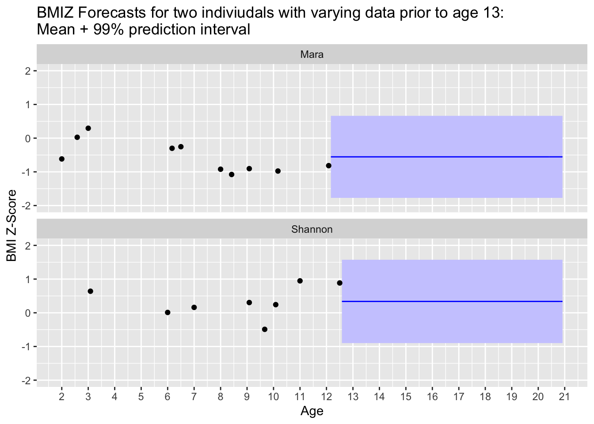
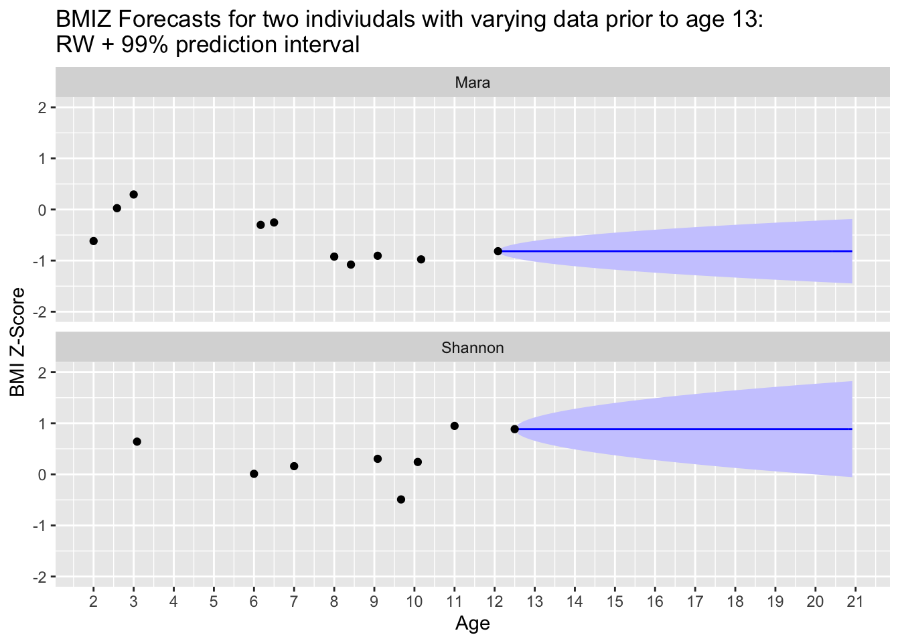
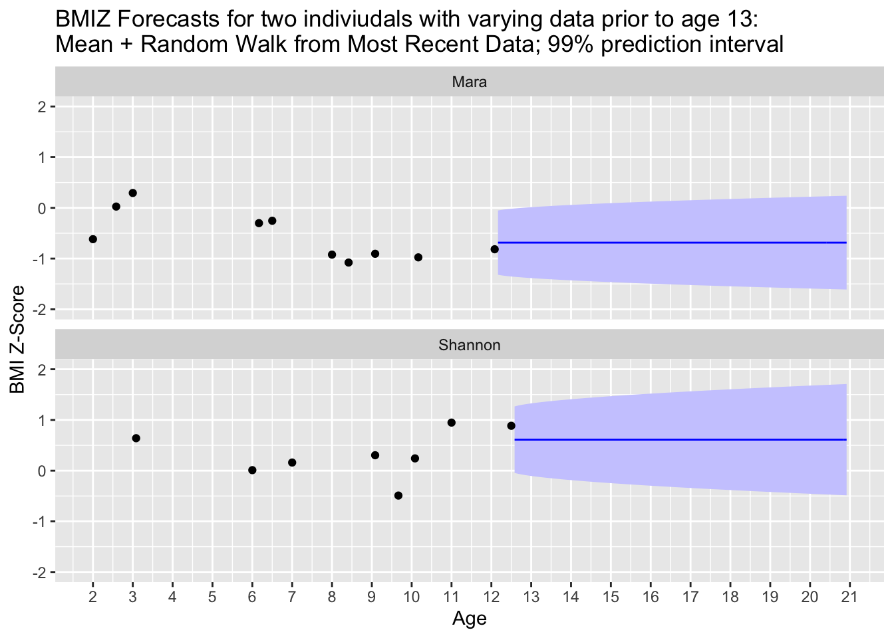
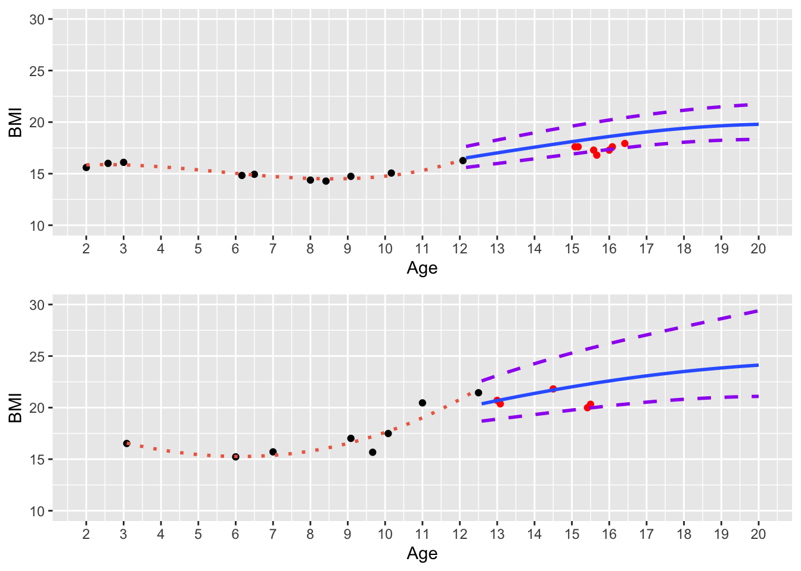

Forecasting BMI
There are 7453 individuals with four or more bmi measurements in the dataset between ages 2-13 years.
When combining data with assessments of body weight after age 12.99, there were a total of 23385 observations of body weight from ages 13-20 in the dataset, across 6633 participants.
Below is a worked example of the steps involved in developing the BMIz forecasts:
Coding and Modeling BMIz from Growth Charts
First, inputs (height and weight or raw BMI values with child age) are converted to BMIz score, which is plotted across childhood along with the mean BMIz and 95% confidence band for this mean. In the current study, we are using data from ages 2-13 years as our prediction set.
After all available BMIz scores are input, prediction of future BMIz is forecast which accounts for recent measures of and variability in BMIz to forecast BMIz moving forward. Further, the overall number of observations and variance in previous BMIz to create a prediction window for future observations.
Three starting models are: Mean, Random Walk, and Random Walk + Mean (RWM). In the mean model, the prediction window for BMIz score is responsive to variance of the BMIz scores in the prediction set, the predicted BMIz score is set at the mean of previous values, and the prediction interval stays constant over time. In the Random Walk model, the predicted value begins at the most recent BMIz data point (closest to age 13), and the prediction window begins very narrow, but widens over time, which accounts for increased confidence in observations that are more proximal to the last measurement. The Mean + Random Walk model combines both models, with a predicted BMIz between the mean of previous values and the most recent, and some widening of the prediction window over time. An alternative model might specify that the highest BMIz scores – regardless of age – define prediction (potentially defining a more conceptually pure value of developmental weight suppression).
In the following example, Participant 1, ‘Mara’, has routine observations with BMI-Z mean of ~ -0.5 in childhood. Participant 2, ‘Shannon’ has routine observations with a BMI-Z of ~ 0.5, fewer assessment points, and slightly higher variability in BMIz. The Mean(Figure 1), Random Walk(Figure 2), and RWM(Figure 3) models are presented below for visualization of expected BMIz over time after age 13 for these individuals.



Comparison with observed values
The below graphs back translate these BMI-Z forecasts to actual BMI numbers over time, using the example of the RWM model with a 95% confidence interval. In Figure 4 we see that Participant 1 has some a datapoint at age 15.5 which falls below the predicted window.
